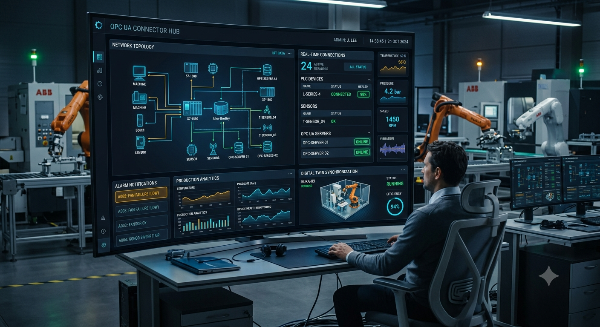

New OPC-UA connector cuts onboarding time to under 3 days
13 Jun 2025 NEW YORK, USA

NEW YORK, USA — JuNE 13, 2025 —
Historically, connecting legacy OT (Operational Technology) assets to modern IT platforms, SCADA systems, and Cloud IoT hubs presented a significant bottleneck for digital transformation projects. Engineers faced several persistent pain points:
Manual Tag Mapping: Complex PLC data structures required painstaking manual cross-referencing and node-by-node mapping. Complex Security Handshakes: Setting up asymmetric encryption, certificate trust stores, and firewall configurations across heterogeneous factory networks took weeks of specialized engineering labor. Network Instability & Timeouts: Traditional drivers frequently dropped sessions due to unoptimized keep-alive intervals, triggering reconnect storms and data loss during network jitter. High Professional Services Costs: Bringing a single manufacturing facility online often demanded weeks of on-site consulting, stalling enterprise-wide rollout schedules.
- → Auto-Discovery & Dynamic Schema import
- → Resilient Sessions Keep
- → Pre-build and low code connectors
"We’ve fundamentally shifted industrial onboarding from a costly multi-week engineering headache into a predictable, weekend plug-and-play task. Cutting integration time to under three days means manufacturers can finally realize OT-IT convergence at enterprise scale."
Want results like this on your own line?
We'll connect a single machine and show you real telemetry inside two weeks.
Request a Demo